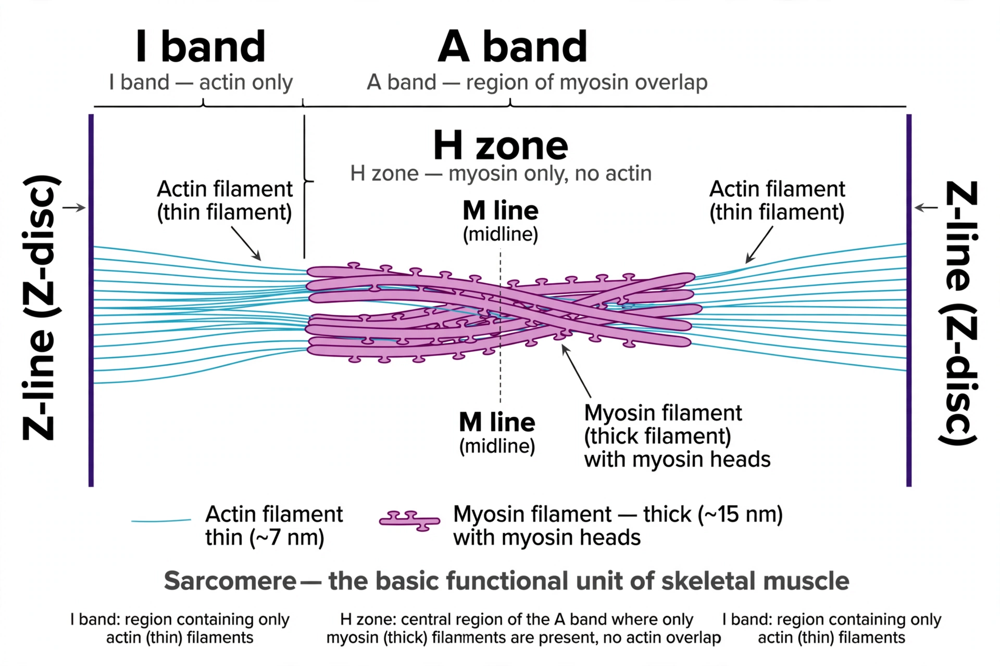

From Wikipedia, the free encyclopedia
| Sarcomere | |
 Structure of a sarcomere, the basic contractile unit of striated muscle | |
| Identifiers | TH: H2.00.05.0.00008 |
| Part of | Myofibril |
| Found in | Skeletal muscle, cardiac muscle |
A sarcomere (Greek σάρξ sarx "flesh", μέρος meros "part") is the smallest functional unit of striated muscle tissue. It is the repeating unit between two Z-lines. Skeletal muscles are composed of tubular muscle cells (called muscle fibres or myofibres) which are formed during embryonic myogenesis. Muscle fibres contain numerous tubular myofibrils. Myofibrils are composed of repeating sections of sarcomeres, which appear under the microscope as alternating dark and light bands. Sarcomeres are composed of long, fibrous proteins as filaments that slide past each other when a muscle contracts or relaxes.
The sarcomere is responsible for the striated appearance of skeletal and cardiac muscle. Two proteins of central importance are myosin, which forms the thick filament, and actin, which forms the thin filament. Myosin has a long fibrous tail and a globular head, which binds to actin. The myosin head also binds to ATP, which is the source of energy for muscle movement. Myosin can only bind to actin when the binding sites on actin are exposed by calcium ions.
When viewed under an electron microscope, a sarcomere displays a characteristic banding pattern:
In a resting mammalian muscle fibre the sarcomere is roughly 1.6–2.6 micrometres long. The giant protein titin runs from the Z-line to the M line and acts as a molecular spring that gives muscle its passive elasticity, while nebulin helps set thin-filament length. Other proteins include tropomyosin and the troponin complex (troponins C, I and T), which regulate contraction in response to calcium released from the sarcoplasmic reticulum.
Muscle contraction is explained by the sliding filament theory, proposed independently in 1954 by Hugh Huxley and Jean Hanson, and by Andrew Huxley and Rolf Niedergerke. According to the theory, the actin and myosin filaments themselves do not shorten; instead, myosin heads form cross-bridges with actin and undergo power strokes that pull the thin filaments toward the centre of the sarcomere. As a result the I bands and H zone shorten and the Z-lines move closer together, while the A band remains the same length.
Contraction is triggered when an action potential arrives at the neuromuscular junction, causing release of calcium ions. Calcium binds to troponin C, shifting tropomyosin away from the myosin-binding sites on actin. ATP hydrolysis then cocks the myosin head, and the cycle of attachment, power stroke and detachment repeats as long as calcium and ATP are available. When stimulation ceases, calcium is pumped back into the sarcoplasmic reticulum and the muscle relaxes.
Mutations in sarcomeric proteins cause a range of inherited diseases. Defects in myosin heavy chain, cardiac troponin and titin are associated with hypertrophic and dilated cardiomyopathies, while mutations in nebulin cause nemaline myopathy, characterised by rod-like inclusions in muscle fibres. Damage to sarcomeres also occurs in muscular dystrophies, where loss of the cytoskeletal protein dystrophin makes the sarcolemma fragile.